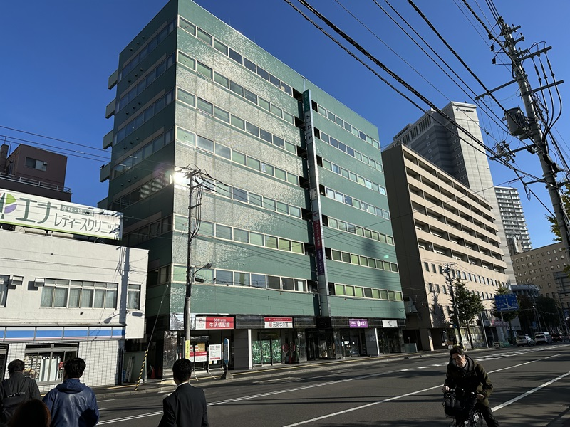

北関東学院とは

北関東学院はハローワーク管轄のもとで企業が実施している求職者支援訓練（職業訓練）校です。
デジタル・IT関連の訓練を求職者向けに実施しており、ハローワークを通じてお申込みいただくことで、無料（別途教科書代要）で受講することができます。
当校でスキルアップを目指しながら、就職活動に取り組みませんか？
当校ではIT・Web関連業界への就職を希望される方向けに３つのコースをご用意。未経験からでも希望の職種を目指せるようサポートいたします。
また、当校では職業訓練に加えて就職支援も実施。早期の再就職を支援いたします。